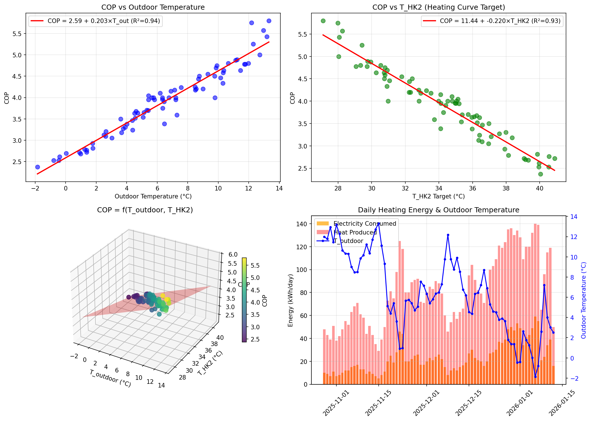

COP optimization: Lower THK2 improves COP.
With ∂COP/∂THK2 = -0.2042, reducing THK2 by 5°C improves COP by ~1.02.
Timing strategy: Run heat pump during warmest Tout (daytime/solar hours)
for better COP. Each +1°C outdoor improves COP by ~0.204.
Capacity headroom: Max observed 59 kWh/day
suggests capacity is sufficient for current heating demand.
Buffer utilization: Buffer tank (mean 36°C)
provides thermal storage for load shifting.

Figure 19: Heat pump analysis: COP vs outdoor temperature (top-left),
COP vs T_HK2 (top-right), 3D COP surface with regression plane (bottom-left),
daily energy with outdoor temperature overlay (bottom-right).